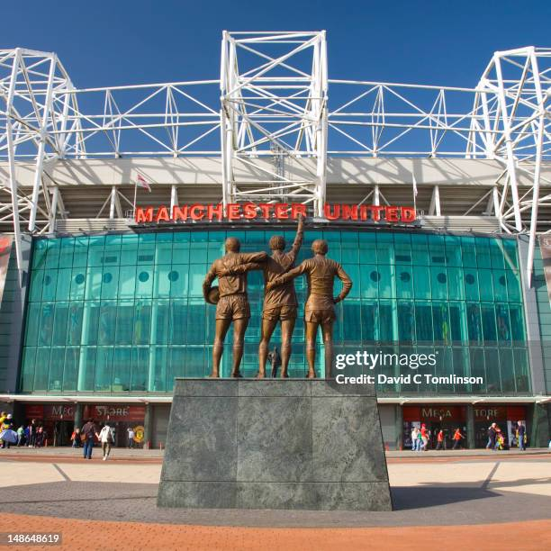
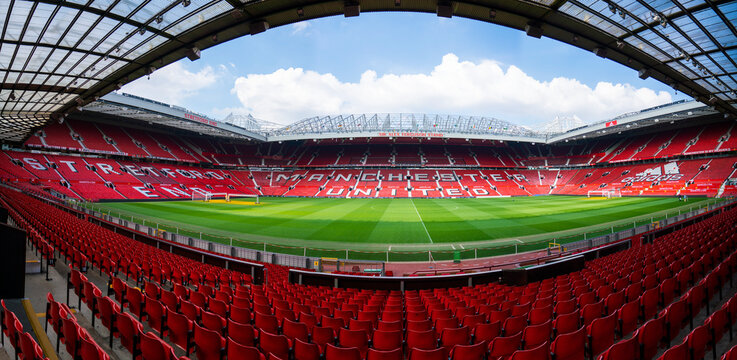

Old Trafford – "The Theatre of Dreams"
Old Trafford has been United's home since 1910. With a capacity of roughly 74,000 it is one of the largest club stadiums in the United Kingdom. The nickname "Theatre of Dreams" was coined by Sir Bobby Charlton.
Opened1910
CapacityAbout 74,000
LocationSir Matt Busby Way, Stretford

